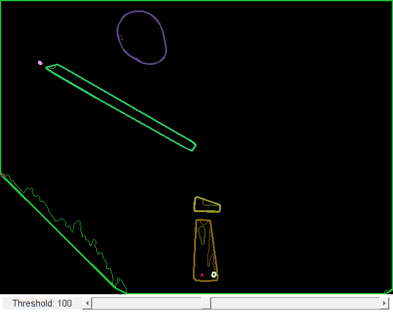

Convex Hull demo
We learn how to get hull contours and draw them.
In this sample you will learn how to use the OpenCV function cv.convexHull.
Sources:
function varargout = hull_demo_gui(im) % load source image if nargin < 1 src = cv.imread(fullfile(mexopencv.root(),'test','stuff.jpg')); elseif ischar(im) src = imread(im); else src = im; end % Convert image to gray and blur it if size(src,3) == 3 src = cv.cvtColor(src, 'RGB2GRAY'); end src = cv.blur(src, 'KSize',[5 5]); % create the UI h = buildGUI(src); if nargout > 0, varargout{1} = h; end end function onChange(~,~,h) %ONCHANGE Event handler for UI controls % retrieve current values from UI controls thresh = round(get(h.slid, 'Value')); set(h.txt, 'String',sprintf('Threshold: %3d',thresh)); % Detect edges using Threshold threshold_output = cv.threshold(h.src, thresh, ... 'MaxValue',255, 'Type','Binary'); % Find contours contours = cv.findContours(threshold_output, ... 'Mode','Tree', 'Method','Simple'); % Find the convex hull object for each contour hull = cell(size(contours)); for i=1:numel(contours) hull{i} = cv.convexHull(contours{i}, 'Clockwise',false); end % Draw contours + hull results drawing = zeros([size(threshold_output) 3], 'uint8'); for i=1:numel(contours) clr = randi([0 255], [1 3], 'uint8'); drawing = cv.drawContours(drawing, contours, ... 'ContourIdx',i-1, 'MaxLevel',0, ... 'Color',clr, 'Thickness',1, 'LineType',8); drawing = cv.drawContours(drawing, hull, ... 'ContourIdx',i-1, 'MaxLevel',0, ... 'Color',clr, 'Thickness',2, 'LineType',8); end % show result set(h.img, 'CData',drawing); drawnow; end function h = buildGUI(img) %BUILDGUI Creates the UI % parameters thresh = 100; max_thresh = 255; sz = size(img); sz(2) = max(sz(2), 250); % minimum figure width % build the user interface (no resizing to keep it simple) h = struct(); h.src = img; h.fig = figure('Name','Convex Hull Demo', ... 'NumberTitle','off', 'Menubar','none', 'Resize','off', ... 'Position',[200 200 sz(2) sz(1)+29]); if ~mexopencv.isOctave() %HACK: not implemented in Octave movegui(h.fig, 'center'); end h.ax = axes('Parent',h.fig, 'Units','pixels', 'Position',[1 30 sz(2) sz(1)]); if ~mexopencv.isOctave() h.img = imshow(img, 'Parent',h.ax); else %HACK: https://savannah.gnu.org/bugs/index.php?45473 axes(h.ax); h.img = imshow(img); end h.txt = uicontrol('Parent',h.fig, 'Style','text', 'FontSize',11, ... 'Position',[5 5 130 20], 'String',sprintf('Threshold: %3d',thresh)); h.slid = uicontrol('Parent',h.fig, 'Style','slider', 'Value',thresh, ... 'Min',0, 'Max',max_thresh, 'SliderStep',[1 10]./(max_thresh-0), ... 'Position',[135 5 sz(2)-135-5 20]); % hook event handlers, and trigger default start set(h.slid, 'Callback',{@onChange,h}, ... 'Interruptible','off', 'BusyAction','cancel'); onChange([],[],h); end